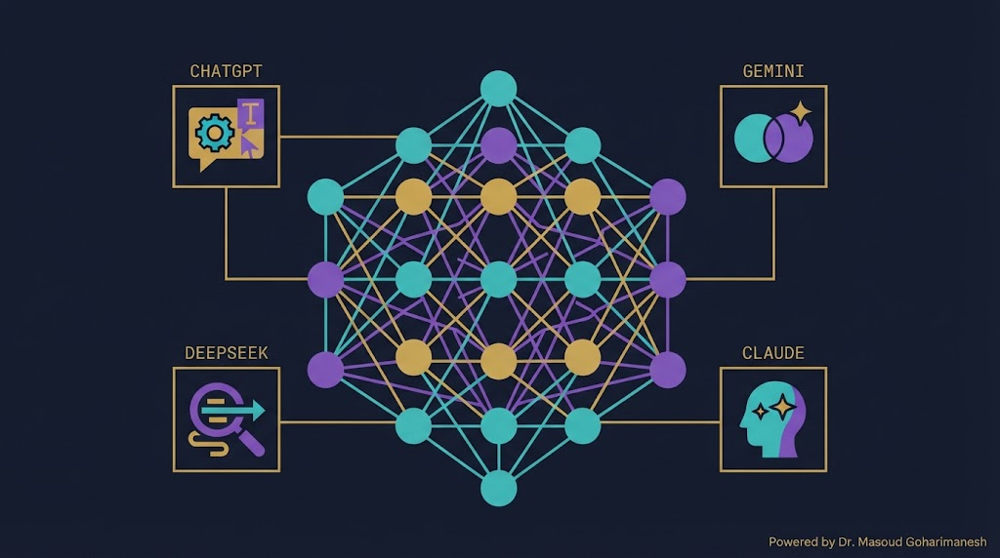
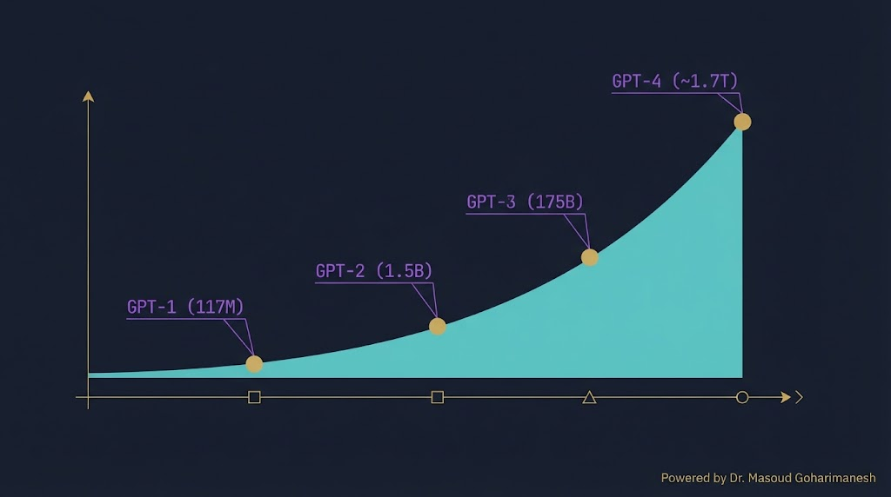
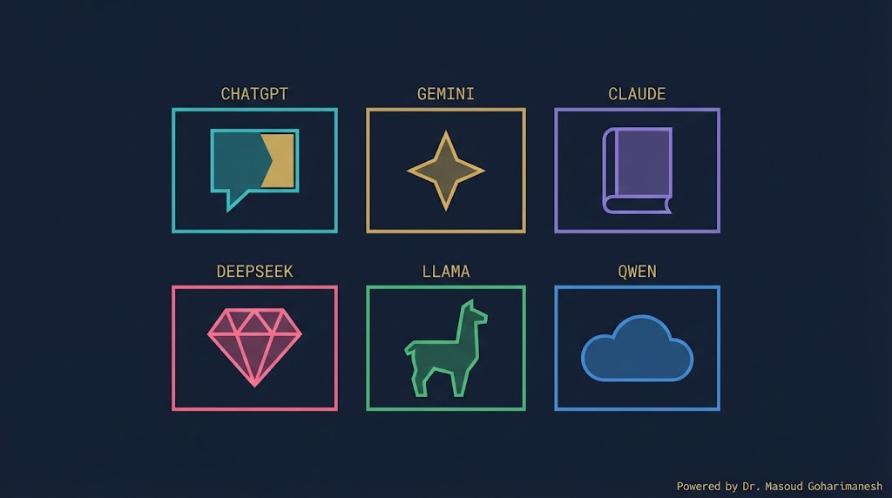
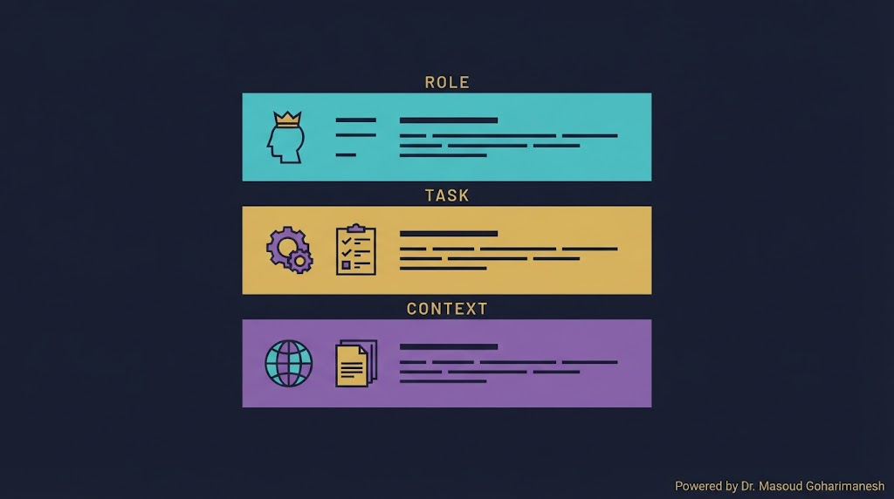
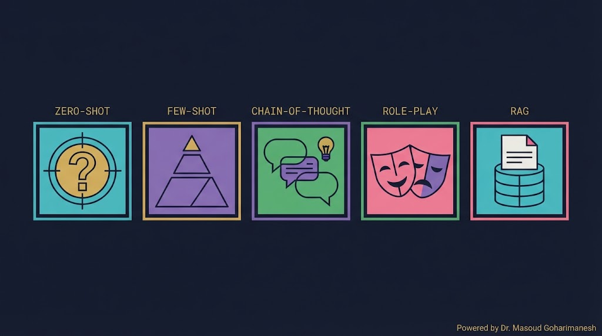
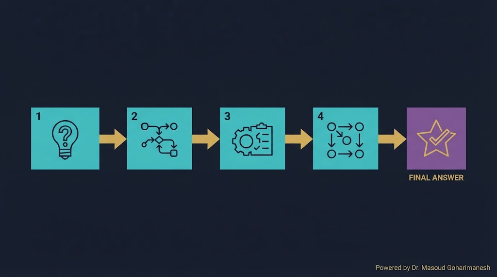
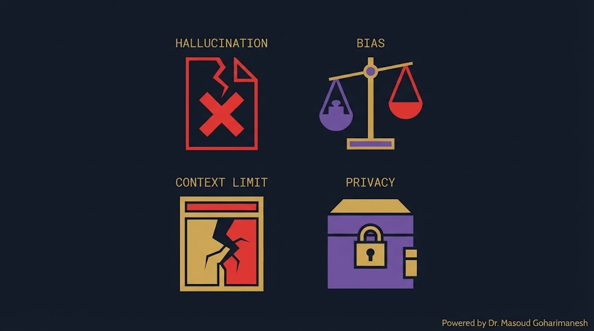
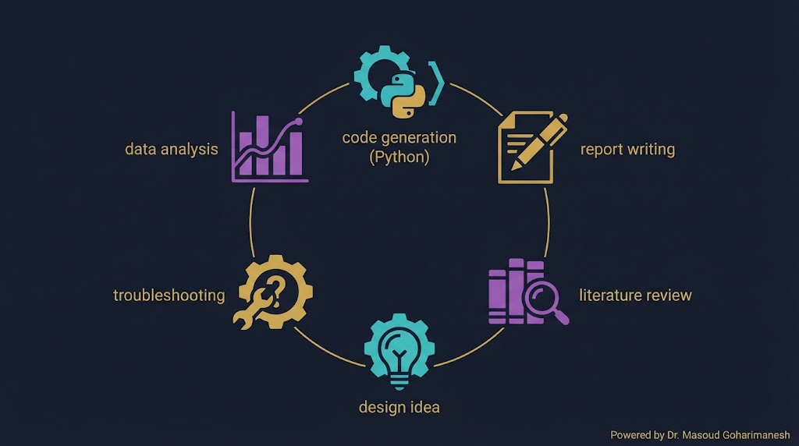

جلسه ۱۸ — LLM و Prompt
جلسه ۱۸ — LLM و Prompt
جلسه ۱۸ — LLM و Prompt
جلسه ۱۸ — LLM و Prompt
 ستاره این جلسه
به یاد شهدای والامقام
ستاره این جلسه
به یاد شهدای والامقامLarge Language Models · Prompt Engineering
ChatGPT · Gemini · Claude · DeepSeek
Transformer، Attention، BERT، GPT
LLM، Prompt Engineering
✅ LLM چیست؟
✅ مدلهای پیشرو
✅ Prompt Engineering
✅ ۵ تکنیک اصلی Prompt
✅ RAG
✅ کاربرد در مکانیک
در جلسه قبل Transformer را دیدیم. حالا میخواهیم ببینیم وقتی یک Transformer را روی تریلیونها کلمه آموزش دهیم چه اتفاقی میافتد: مدلی که میتواند کد بنویسد، مقاله خلاصه کند، ترجمه کند، و حتی استدلال کند.
این همان LLM (Large Language Model) است — پایه ChatGPT، Gemini، Claude، DeepSeek و... و مهمتر: هر مهندسی باید بداند چطور با این ابزارها کار کند.

OpenAI — پیشرو
Google — چندوجهی
Anthropic — متون طولانی
چین — باز و رایگان
LLM (Large Language Model — مدل زبانی بزرگ) یک مدل Transformer با میلیاردها پارامتر است که روی حجم عظیمی از متن آموزش دیده.
پیشبینی توکن بعدی — همین!
میلیاردها تا تریلیونها
تریلیونها توکن متن
سادگی کار = قدرت شگفتانگیز

| مدل | سال | پارامتر | پیشرفت |
|---|---|---|---|
| GPT-1 | ۲۰۱۸ | ۱۱۷ میلیون | شروع |
| GPT-2 | ۲۰۱۹ | ۱.۵ میلیارد | ۱۳× |
| GPT-3 | ۲۰۲۰ | ۱۷۵ میلیارد | ۱۱۷× |
| GPT-4 | ۲۰۲۳ | ~۱.۷ تریلیون | ~۱۰× |
تعداد پارامترها را تغییر دهید و ببینید اندازه مدل چطور رشد میکند.

| مدل | شرکت | ویژگی کلیدی |
|---|---|---|
| GPT-4o | OpenAI | چندوجهی، سریع، بهترین کیفیت |
| Claude 3.5 | Anthropic | متون طولانی، امن |
| Gemini 1.5 | Context بزرگ، ویدئو | |
| LLaMA 3 | Meta | باز، قابل اجرا محلی |
| DeepSeek-V3 | DeepSeek | باز، رایگان، ریاضی |
| Qwen 2.5 | Alibaba | چندزبانه، فارسی |
مدلها را از نظر چند معیار مقایسه کنید.
Prompt Engineering هنر نوشتن ورودی مناسب برای LLM است تا بهترین خروجی را بگیریم. یک Prompt خوب میتواند تفاوت بین یک پاسخ بیکیفیت و یک پاسخ عالی باشد.

«تو یک مهندس مکانیک ارشد با ۲۰ سال تجربه هستی»
«کدی برای شبیهسازی سیستم جرم-فنر-دمپر بنویس»
«پارامترها: m=1kg، k=10N/m، c=0.5Ns/m»
«کد Python با Matplotlib، همراه با توضیحات فارسی»
اجزای Prompt را انتخاب کنید و ببینید چطور Prompt نهایی شکل میگیرد.

هیچ مثالی نمیدهیم
چند مثال میدهیم
«گام به گام فکر کن»
نقش تعریف میکنیم
اطلاعات خارجی میدهیم
بدون هیچ مثالی — مستقیم میپرسیم.
چند مثال میدهیم — مدل الگو را یاد میگیرد.
Few-Shot برای کارهای تخصصی و الگوهای خاص بهتر است.

با اضافه کردن عبارت «گام به گام فکر کن» یا «Let's think step by step»، مدل مجبور میشود استدلال خود را نشان دهد — و پاسخ دقیقتری میدهد.
«۴۲» (ممکن است اشتباه باشد)
«اول X را حساب میکنم... سپس Y... پاسخ: ۴۲»
وقتی به مدل یک نقش میدهیم، پاسخهایش با آن نقش هماهنگ میشود.
«تو یک معلم صبور هستی که مفاهیم را ساده توضیح میدهی»
«تو یک مهندس ارشد با ۲۰ سال تجربه هستی»
«تو یک پزشک متخصص هستی که دقیق تشخیص میدهی»
«تو یک محقق دقیق هستی که منابع را ذکر میکنی»
RAG (Retrieval-Augmented Generation) — قبل از پاسخ، اطلاعات مرتبط را از یک منبع (کتاب، مقاله، دیتابیس) بازیابی میکنیم و به مدل میدهیم.
سؤال کاربر
جستوجو در Vector DB
افزودن به Prompt
پاسخ با منابع

مدل اطلاعات نادرست با اطمینان تولید میکند
سوگیری از داده آموزش
محدودیت طول متن
حریم خصوصی دادهها

MATLAB، Python، Simulink
تحلیل سریع مقالات علمی
جستوجوی سریع منابع
پیشنهاد راهحلهای خلاقانه
# نصب pip install openai import os from openai import OpenAI # تنظیم کلید API client = OpenAI(api_key="sk-...") # درخواست ساده response = client.chat.completions.create( model="gpt-4o", messages=[ {"role": "system", "content": "تو یک مهندس مکانیک هستی"}, {"role": "user", "content": "کد Python برای حل معادله گرما بنویس"} ], temperature=0.7 ) print(response.choices[0].message.content) # Chain-of-Thought response = client.chat.completions.create( model="gpt-4o", messages=[ {"role": "user", "content": "یک تیر فولادی با طول 2 متر و مقطع 10cm² تحت بار 5kN است. " "تغییر طول چقدر است؟ گام به گام فکر کن."} ] ) print(response.choices[0].message.content)
# نصب pip install transformers torch from transformers import pipeline # ۱. متن تولید generator = pipeline('text-generation', model='gpt2') result = generator("The future of mechanical engineering is", max_length=50) print(result[0]['generated_text']) # ۲. خلاصهسازی summarizer = pipeline('summarization', model='facebook/bart-large-cnn') text = "Long mechanical engineering paper..." summary = summarizer(text, max_length=100) print(summary[0]['summary_text']) # ۳. پاسخ به سؤال qa = pipeline('question-answering') result = qa({ 'question': 'What is the yield strength?', 'context': 'The steel has yield strength of 250 MPa.' }) print(result)
[AI] HW18 - نام - شماره دانشجویی به arcslab.uth@gmail.com
پیشبینی توکن بعدی در مقیاس عظیم
GPT-4o، Claude، Gemini، DeepSeek، LLaMA
Role + Task + Context + Format
Zero/Few-Shot، CoT، Role-Play، RAG
Hallucination، Bias، Context Limit، Privacy
Next Session: RAG & AI Agents
• Vector Database و Embeddings
• RAG Pipeline کامل
• LangChain و LlamaIndex
• AI Agent — Tool Use، Memory
• Multi-Agent Systems